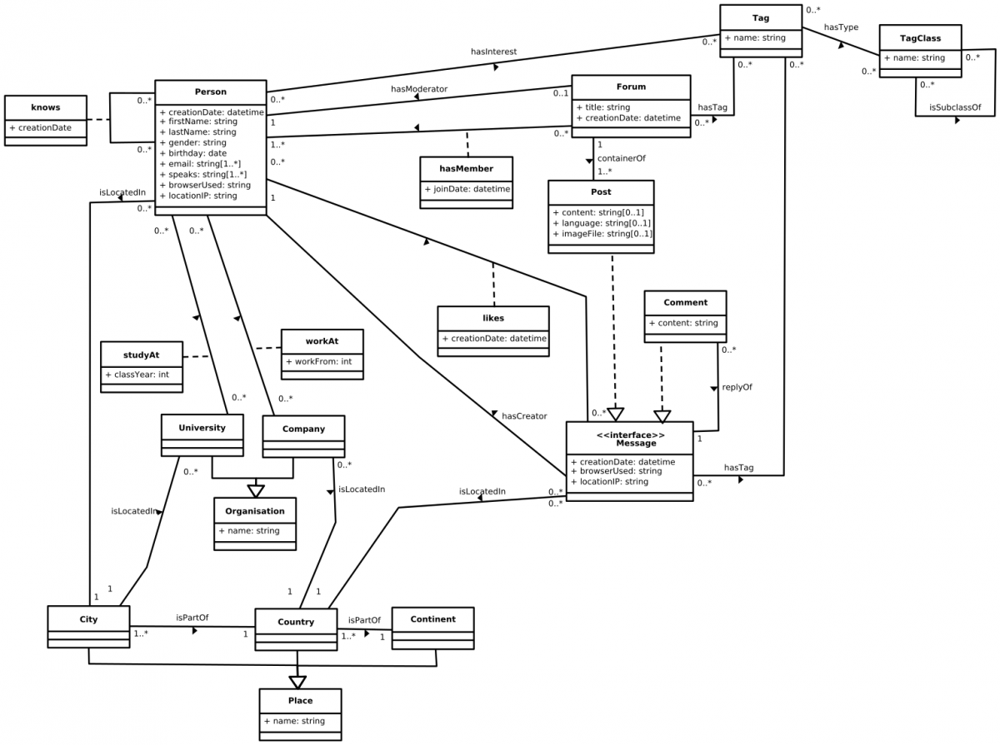

In a previous blog post titled “Is SNB like Facebook’s LinkBench?”, Peter Boncz discusses the design philosophy that shapes SNB and how it compares to other existing benchmarks such as LinkBench. In this post, I will briefly introduce the essential parts forming SNB, which are DATAGEN, the LDBC execution driver and the workloads.
DATAGEN
DATAGEN is the data generator used by all the workloads of SNB. Here we introduced the design goals that drive the development of DATAGEN, which can be summarized as: Realism, Scalability, Determinism and Usability.
DATAGEN produces datasets with the following schema, in terms of entities and their relations. Data generated represents a snapshot of the activity of a social network similar to real social networks such as Facebook, during a period of time. Data includes entities such as Persons, Organizations, and Places. The schema also models the way persons interact, by means of the friendship relations established with other persons, and the sharing of content such as messages (both textual and images), replies to messages and likes to messages. People form groups to talk about specific topics, which are represented as tags.

For the sake of credibility, data produced by DATAGEN has to be realistic. In this sense, data produced by DATAGEN not only has a realistic schema, but also pays attention to the following items:
-
Realistic distributions. The degree distribution of friendship relationships has been modeled to reproduce that found in the Facebook graph. Also, other distributions such as the number of replies to a post, the number of persons per country or the popularity of a tag has been realistically modeled either using known distributions or data extracted from real sources such as Dbpedia.
-
Correlated attributes and relations. Attribute values are not chosen at random, but follow correlations. For instance, people from a specific country have a larger probability to have names typical from that country, to work on companies from that country or to study at universities of that country. Also, we DATAGEN implements a relationship creation process that tries to reproduce the homophily principle, that is, people with similar characteristics tend to be connected.
DATAGEN is built on top of Hadoop, to generate datasets of different sizes. It works either on single node SMP machines or a cluster environment. DATAGEN supports different output formats targeting different systems. On the one hand, we have the CSV format, where each entity and relation is output into a different comma separated value file. On the other hand, it also supports the Turtle format for RDF systems.
Finally, DATAGEN outputs two other things:
-
Update Streams, which will be used in the future to implement updates in the workloads.
-
Substitution parameters, which are the parameters of the query instances the LDBC driver will issue. These are select so the query plans of the resulting query executions do not differ significantly.
Configuring and using DATAGEN is easy. Please visit this page for more information.
LDBC driver
SNB is designed to be as easier to adopt as possible. Therefore, SNB provides the LDBC execution driver, which is designed to automatically generated the benchmark workload and gather the benchmark results. It then generates a stream of operations in conformance with a workload definition, and executes those operations against some system using the provided database connector, and with the substitution parameters produced by DATAGEN. During execution, the driver continuously measures performance metrics, then upon completion it generates a report of those metrics.
It is capable of generating parallel workloads (e.g. concurrent reads and writes), while respecting the configured operation mix and ensuring that ordering between dependent operations is maintained. For further details on how the driver achieves that, please visit the Documentation page.
The test sponsor (aka the implementer of the benchmark), has to provide a set of implemented interfaces, that form a benchmark implementation to plug into the driver, and then the benchmark is automatically executed.
Given a workload consisting of a series of Operations, the test sponsor implements OperationHandlers __ for them. OperationHandlers are responsible of executing instances of an specific operation (query) type. This is done by overriding the method executeOperation(), which receives as input parameter an Operation instance and returns the result. From Operation __ instance, the operation’s input parameters can be retrieved, as well as the database connection state.
The database connector is used to initialize, cleanup and get the database connection state. The database connector must implement the Db interface, which consists of three methods: onInit(), onCleanup() and getConnectionState(). onInit() is called before the benchmark is executed, and is responsible of initializing the database and registering the different OperationHandlers. onCleanup() is called after the benchmark has completed. Any resources that need to be released should be released here.
Finally, getConnectionState() returns an instance of DbConnectionState, which encapsulates any state that needs to be shared between OperationHandler instances. For instance, this state could contain the necessary classes used to execute a given query for the implementing system.
A good example on how to implement the benchmark can be found here.
Workloads
Currently, LDBC has only released the first draft of the Interactive workload, but the business intelligence and analytical workloads are on the works. Workloads are designed to mimic the different usage scenarios found in operating a real social network site, and each of them targets one or more types of systems. Each workload defines a set of queries and query mixes, designed to stress the systems under test in different choke-point areas, while being credible and realistic.
Interactive workload reproduces the interaction between the users of the social network by including lookups and transactions that update small portions of the data base. These queries are designed to be interactive and target systems capable of responding such queries with low latency for multiple concurrent users. Examples of Interactive queries are, given a user, retrieve those friends with a specific name, or finding the most recent post and comments created by your friends.
Business Intelligence workload, will represent those business intelligence analytics a social network company would like to perform in the social network, in order to take advantage of the data to discover new business opportunities. This workload will explore moderate portions of data from different entities, and will perform more complex and data intensive operations compared to the Interactive ones.
Examples of possible Business Intelligence queries could be finding trending topics in country in a given moment, or looking for fraudulent “likers”.
Finally, the Analytical workload will aim at exploring the characteristics of the underlying structure of the network. Shortest paths, community detection or centrality, are representative queries of this workload, and will imply touching a vast amount of the dataset.
Final remarks
This is just a quick overview of the SNB benchmark. For a more detailed description, do not hesitate to read the official SNB specification draft, and stay tunned to the LDBC blog for future blog posts detailing all of the SNB parts in depth.